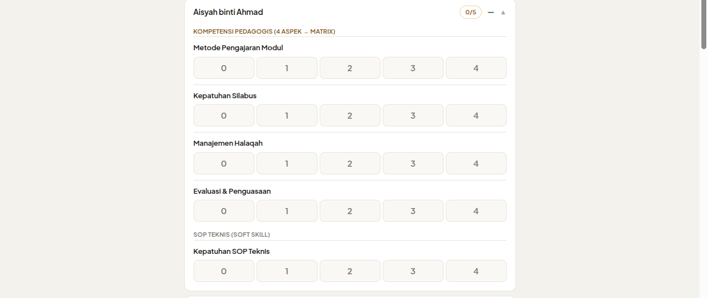
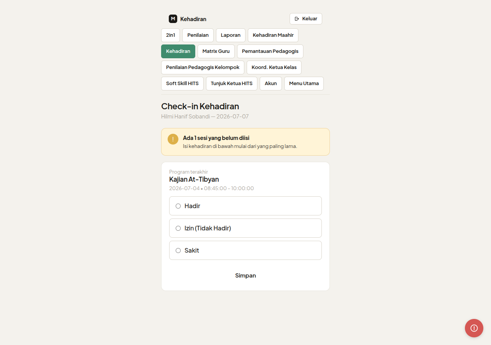
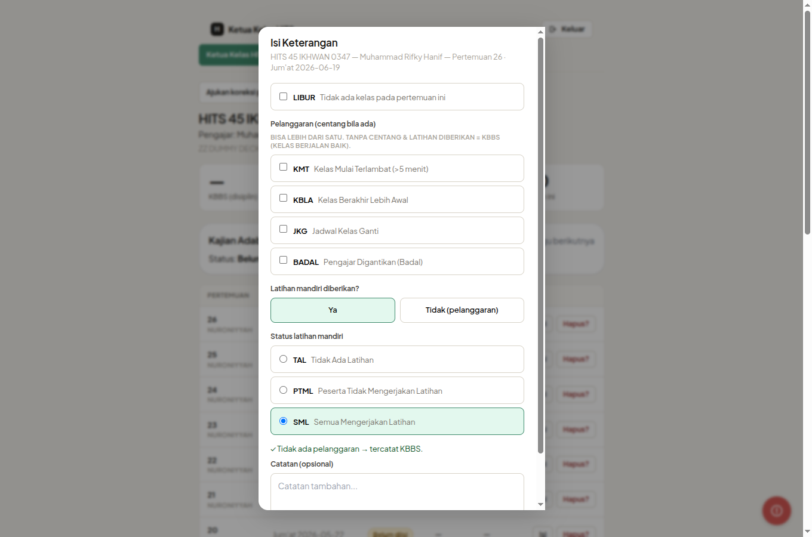
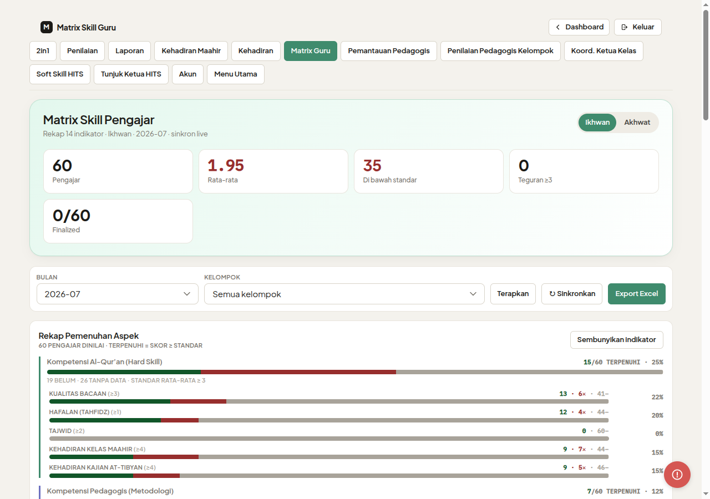
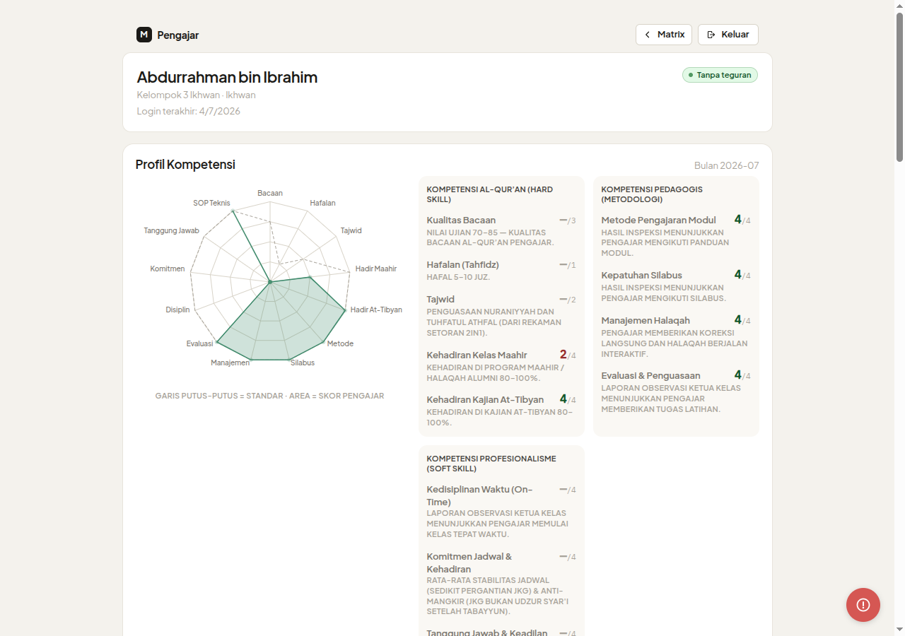

Satu pengajar, satu skor bulanan holistik dari tiga dimensi kompetensi
Tiap bulan, kompetensi pengajar dirangkum dari tiga dimensi. Rata-rata ketiganya jadi skor keseluruhan — dasar ranking, tindak lanjut, dan pembinaan.
Kompetensi Al-Qur'an · 5 indikator · standar 3.
Metodologi mengajar · 4 indikator · standar 4.
Profesionalisme & disiplin · 4 indikator · standar 4.
Rata-rata 3 dimensi · standar 3.67.
Rata-rata berbobot · standar dimensi 3.
Rata-rata sederhana · standar dimensi 4.
Rata-rata sederhana · standar dimensi 4.
Standar tidak seragam. Contoh Hard: Bacaan cukup 3, Hafalan 1, Tajwid 2, Kehadiran wajib 4. Warna dihitung per indikator terhadap standarnya sendiri — bukan satu ambang untuk semua.
Kehadiran paling berat — disiplin hadir menentukan skor Hard. Indikator kosong di-skip, bobot dinormalkan ulang.
Diisi Ketua Kelompok (pengajar senior tiap kelompok) sekali per bulan, lewat form Penilaian Pedagogis — skala 0–4 tiap aspek.
Catatan: aspek Kepatuhan SOP Teknis (on-cam saat KBM) juga diisi di form yang sama, tapi masuk hitungan Soft Skill.
Hard = rata berbobot (9 porsi) · Pedagogis & Soft = rata sederhana.
Rata-rata Hard, Pedagogis, Soft · standar keseluruhan 3.67.
Yang 3 dimensinya lengkap selalu di atas yang baru 1–2 dimensi.
Setelah lengkap, urut skor keseluruhan menurun.
Di bawah nilai ini = perlu perhatian. Kolom "Di bawah standar" di dashboard menghitungnya.
Hanya yang lengkap dapat nomor rank. Pengajar dengan data belum penuh tampil tanpa peringkat — bukan berarti buruk, tapi datanya belum cukup dinilai.
| Peran | Mengisi | Rute | Kapan |
|---|---|---|---|
| Masyaikh / Koordinator | Kualitas Bacaan & Hafalan (0–4) | …/penilaian | Bulanan |
| Ketua Kelompok | 4 skor pedagogis + SOP Teknis | …/kehadiran/ketua-kelompok/penilaian | Bulanan |
| Ketua Kelas HITS | Observasi harian (KBBS, latihan) | …/hits/ketua | Tiap pertemuan |
| Pengajar | Check-in kehadiran Maahir & At-Tibyan | …/kehadiran/pengajar | Tiap sesi |


Koordinator tidak mengetik skor Soft. Cukup pastikan ketua kelas mengisi observasi — sistem menghitung %KBBS, JKG, dan teguran jadi skor 0–4.


Sinkronkan memperbarui skor bulan berjalan · Export Excel untuk arsip & rapat.

Tindak lanjut koordinator: baca titik merah radar → beri catatan/teguran, ingatkan penilai yang belum mengisi, atau jadwalkan pembinaan.
| Halaman | Rute | Peran |
|---|---|---|
| Dashboard matrix | maahir.muhajirproject.org/matrix/koordinator | Koordinator |
| Profil pengajar | maahir.muhajirproject.org/matrix/koordinator/pengajar/[id] | Koordinator |
| Penilaian Bacaan & Hafalan | maahir.muhajirproject.org/penilaian | Masyaikh |
| Penilaian Pedagogis | maahir.muhajirproject.org/kehadiran/ketua-kelompok/penilaian | Ketua Kelompok |
| Observasi harian (Soft) | maahir.muhajirproject.org/hits/ketua | Ketua Kelas |
| Check-in kehadiran (Hard) | maahir.muhajirproject.org/kehadiran/pengajar | Pengajar |